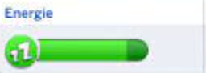
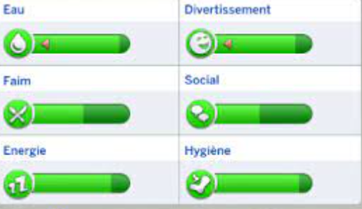

Les personnages peuvent se nourrir dans divers endroits tels que les restaurants, le Lidl et la cuisine à domicile.
Le choix de l'alimentation affecte la santé globale des personnages.
Une alimentation équilibrée contribue à maintenir une bonne santé physique et mentale.
Il est essentiel de surveiller la qualité des repas pour optimiser la santé des personnages.
Barre de Sommeil

Illustration de la barre de sommeil.
La barre de sommeil mesure le niveau de repos d'un personnage.
Le sommeil est essentiel pour recharger l'énergie et maintenir la santé mentale.
Si un personnage ne dort pas suffisamment, sa performance globale diminuera, affectant sa productivité et son bien-être général.
Les personnages peuvent dormir chez eux pour garantir un repos adéquat.
Barre d'Hygiène
Illustration de la barre d'hygiène.
Le maintien de l'hygiène personnelle est crucial pour le bien-être des personnages.
Les personnages peuvent utiliser des toilettes publiques situées dans toute la ville pour satisfaire leurs besoins naturels.
Une bonne hygiène contribue à une vie saine et évite tout inconfort inutile.
Barre d'Énergie pour le Bonheur
Illustration de la barre d'énergie pour le bonheur.
Les activités agréables, comme se divertir au parc ou sortir en boîte de nuit, contribuent au bonheur des personnages.
Maintenir un niveau élevé de bonheur améliore la qualité de vie générale des personnages.
Interactions avec l'Environnement

Illustration des interactions avec l'environnement.
Les personnages ont plusieurs moyens d'interagir avec leur environnement :
- Alimentation : Les restaurants, le Lidl et la cuisine à domicile sont des endroits où les personnages peuvent se nourrir.
- Sommeil : Les personnages peuvent dormir chez eux.
- Hygiène : Des toilettes publiques sont disponibles dans toute la ville.
- Bonheur : Interagir avec des personnages non-joueurs ou d'autres joueurs dans la ville, se divertir dans le cinéma, au parc ou dans le club.